Fifty jars, one row.
Jars and bags from the same batch sit together in a row you can open. A full shelf stays readable, and search finds a code or a strain in a second.
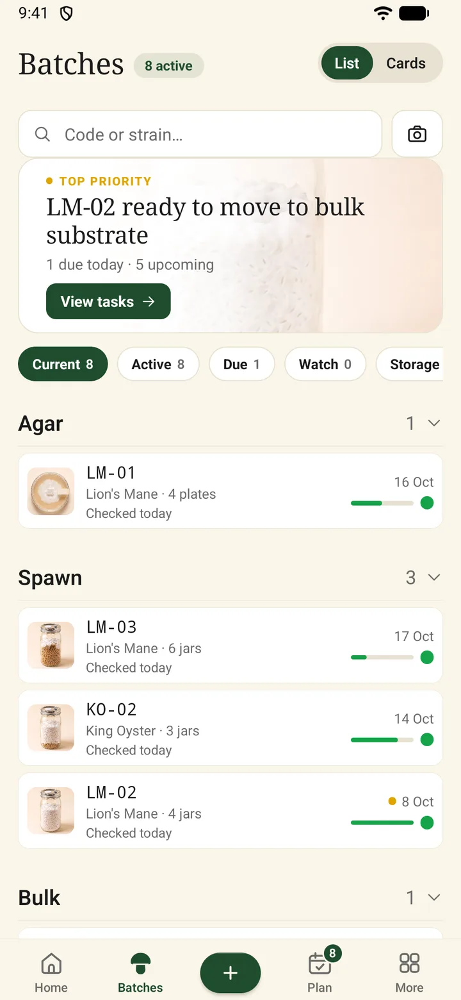
Every batch from agar plate to harvest, with its lineage, its contamination history and what needs doing today. Works offline in the grow room.
Free while in early access. Android now, iPhone later. No ads.
Or write to hello@getspora.app
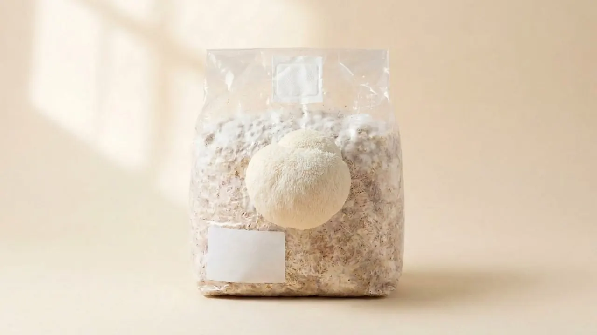
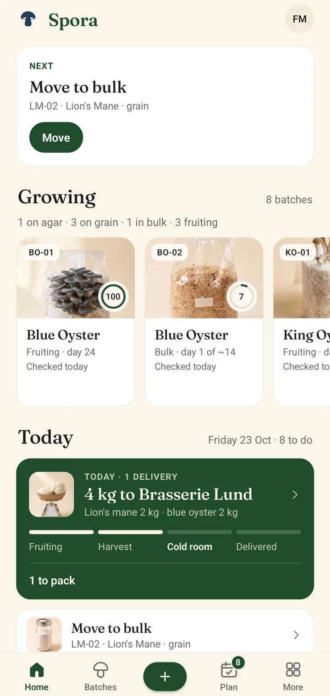
Agar, liquid culture, grain, bulk and fruiting. Every batch keeps its lineage and generation, even spawn pooled from several parents. Six screens from the app, shown with a sample farm.
Jars and bags from the same batch sit together in a row you can open. A full shelf stays readable, and search finds a code or a strain in a second.

Log how far the mycelium has spread and the picture follows, step by step. Health, the next check and the expected ready date sit on the same page, so one glance tells you where a batch stands.
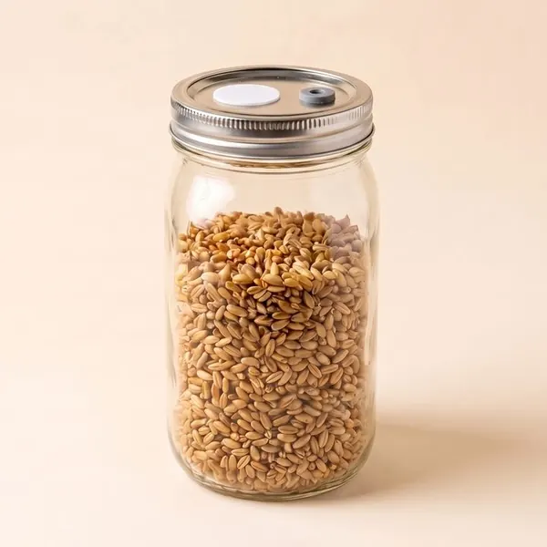
Day one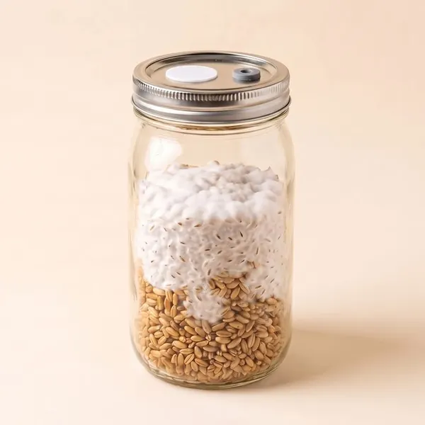
Halfway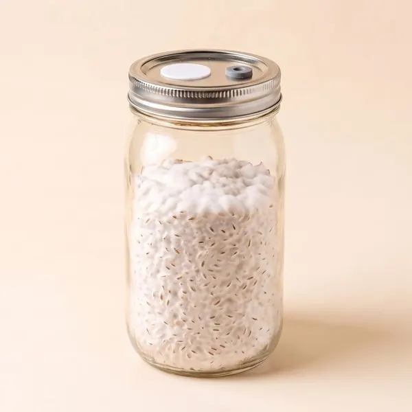
Ready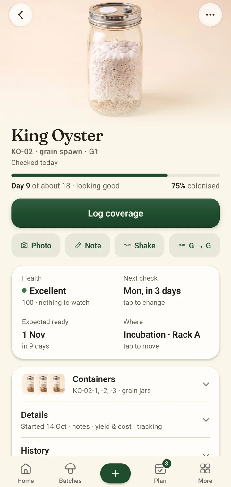
What to inoculate, move, check or harvest, and on which day. Add your own tasks, get one reminder in the morning, and a busy Friday does not cost you a batch.
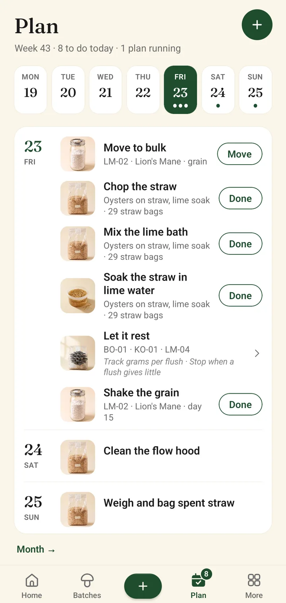
Print small QR labels on a Bluetooth label printer, or export a PDF for any printer. Scan a label and the jar opens.
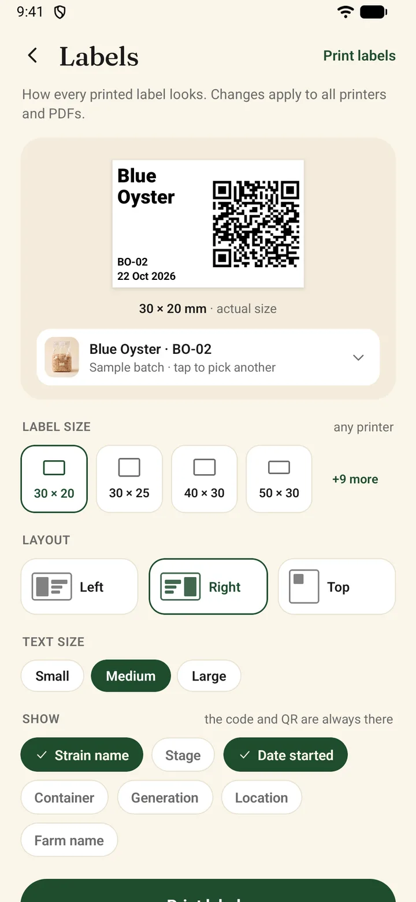
Orders from your restaurants, set against what is ready in the cold room. You see what is short before the day comes.
Selling a few boxes at a market? It works the same.
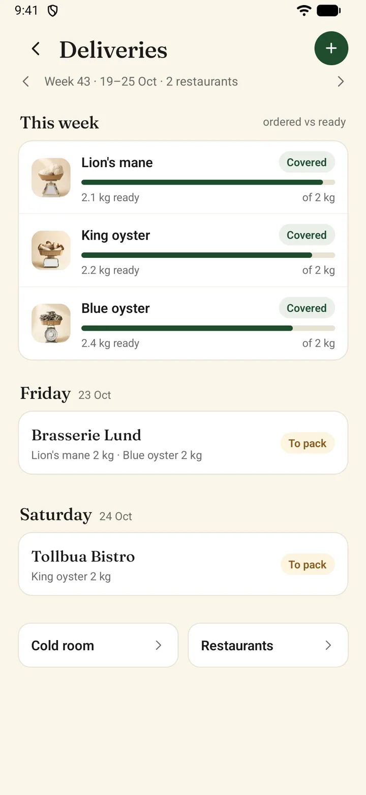
The records a mycologist wants, written so a first-year grower can follow them.
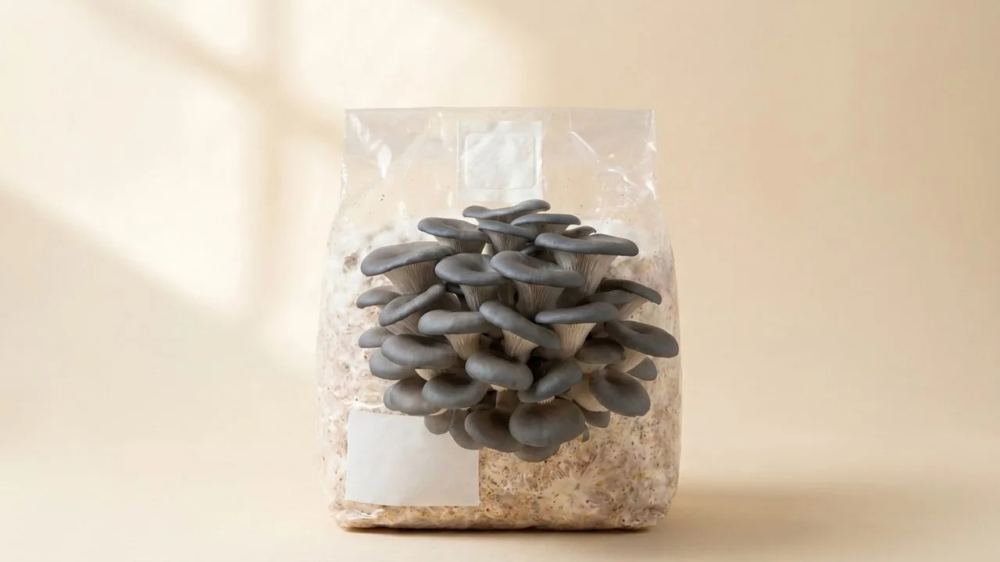
Spora is made by the people who run a small gourmet mushroom farm in Oslo. Lion's mane, king oyster and blue oyster go out to restaurants every week, and this is the log we keep.
Every screen is something we do ourselves: the Monday inoculation, the Thursday check, the Friday delivery. When a jar turns green, we log it and the cause. When a chef calls, we look at the cold room on the phone.
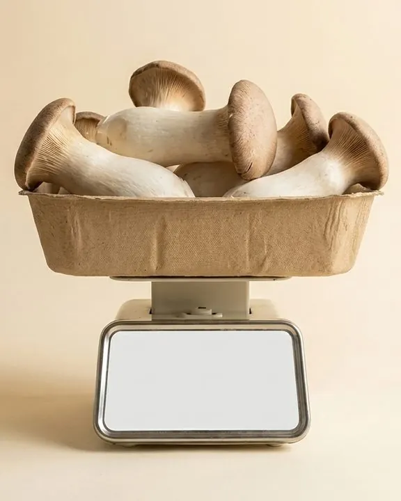
King oyster Pleurotus eryngii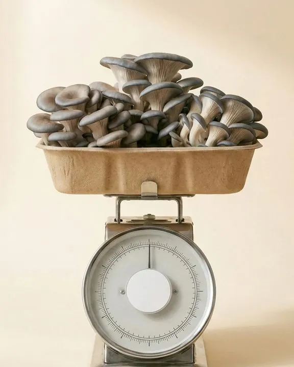
Blue oyster Pleurotus ostreatus, blue strainA small group of growers is using Spora before it opens on Google Play. It's free while we test, from a shelf of jars to a full grow room.
No ads, no card, and your data is never sold. Your records are yours to export at any time. hello@getspora.app
Yes. Everything is kept on the phone first, so you can log, scan and check in a basement or a grow tent with no signal. When you are back online and signed in, it syncs to the cloud and to your other devices.
You do. Settings holds an export to Excel and a full backup file, and you can take either whenever you like. Synced data is stored in the EU (Ireland). We never sell data, show ads or track you across other apps.
Yes, from inside the app under Settings, and it takes effect straight away. If you cannot open the app, email us and we delete it within 30 days. What gets removed.
Nothing while in early access. There will always be a free plan; paid plans for bigger farms come later, and you will hear about them before anything changes. Your data stays exportable either way.
It is being built. Send a short email with the subject "Spora iPhone" and you will hear from us the day it is on the App Store. Nothing else, and no list to leave.
English, Norwegian, Polish, German and Spanish. The app follows your phone's language, and you can change it in Settings.
Phomemo Bluetooth label printers such as the M110, M220 and M221 print straight from the phone, down to 30 by 20 millimetres, one label or a whole tray at once. More models, including Niimbot, are being tested. For any other printer, export an A4 sheet as a PDF.
Bring your records with you. Export them from your old grow app or save your spreadsheet as CSV or Excel, and Spora rebuilds your strains, batches, lineage and harvests. You see everything before it is saved, and you can undo the import for a week.
Only if you want it to be. When you start, you choose Simple or Full. Simple shows what to do today, your grows in plain words and three big buttons on each batch. Full adds lineage codes, the lab, analytics, deliveries and scanning. Switch any time in Settings; nothing is deleted.
No. A tent with six jars gets the same lineage, contamination log and weekly plan as a grow room with six hundred. The orders and cold-room parts only matter once you sell.
Write a line about what you grow and we will send the invite.
Ask for an invite